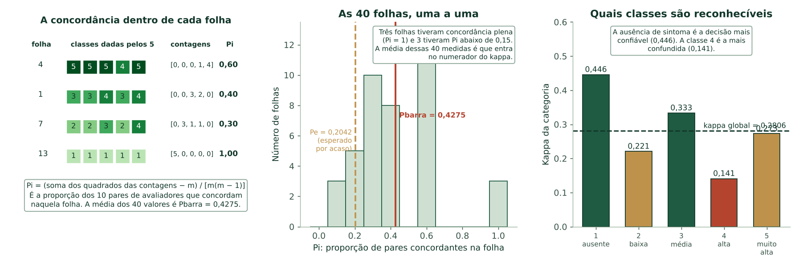
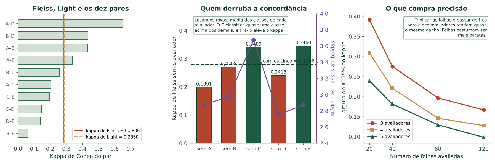

Kappa de Fleiss
Generaliza o kappa para três ou mais avaliadores intercambiáveis, contando os pares concordantes dentro de cada unidade.
Comece por aqui
O kappa de Cohen compara dois avaliadores. Quando há três ou mais, e quando eles são intercambiáveis — isto é, quando não interessa quem é quem —, o kappa de Fleiss é a generalização natural. Ele não compara avaliadores dois a dois: para cada unidade, conta quantos pares de avaliadores concordaram, e compara esse total com o que se esperaria por acaso.
No kappa de Fleiss, nem sempre são os mesmos avaliadores que julgam todas as unidades: o que se exige é que cada unidade seja julgada por \(m\) avaliadores quaisquer, sorteados de um mesmo pool. Quando os avaliadores são fixos e identificados — como nos dados desta ficha —, o coeficiente continua válido, mas perde-se informação sobre quem destoa. A análise deixa-um-de-fora recupera parte dessa informação.
O que é o kappa de Fleiss
Para cada unidade \(i\), conte quantos dos \(\binom{m}{2}\) pares de avaliadores a classificaram na mesma categoria, e divida por \(\binom{m}{2}\). Isso dá \(P_i\), a concordância daquela unidade. A média dos \(P_i\) é a concordância observada global, e a esperada vem das proporções globais de cada categoria.

Há dois modos de levar o kappa a \(m\) avaliadores. O de Fleiss usa as proporções globais de cada categoria para calcular \(p_e\), supondo avaliadores intercambiáveis. O de Light calcula um kappa de Cohen para cada par, com as marginais daquele par, e tira a média. Nos dados desta ficha dão 0,2806 e 0,2860 — quase idênticos. Eles se separam quando algum avaliador tem viés marginal forte.
Pressupostos e como verificá-los
| Pressuposto | Por que importa | Como verificar |
|---|---|---|
| O mesmo número m de avaliadores por unidade | A fórmula pressupõe m fixo. | Conte as avaliações por unidade; com m variável, use o alfa de Krippendorff. |
| Avaliadores intercambiáveis | pe usa as marginais globais, não as de cada avaliador. | Compare as distribuições por avaliador; se uma destoar muito, o pressuposto é frágil. |
| Categorias nominais, exclusivas e exaustivas | Cada avaliação cai em exatamente uma. | Soma das contagens = n × m. |
| Unidades independentes | O erro-padrão pressupõe isso. | Delineamento. |
| Avaliações independentes entre si | Avaliadores que se consultam inflam a concordância. | Protocolo. |
| Escala sem ordem relevante | Fleiss não dá crédito parcial. | Com escala ordinal, prefira o AC2 ou o ICC. |
| Categorias com frequência razoável | Classes raras tornam o coeficiente instável. | Tabela de prevalências. |
A fórmula de Fleiss (1971) para o erro-padrão foi derivada sob a hipótese nula de que \(\kappa=0\), e é isso que kappam.fleiss() usa no teste \(z\). Nos dados desta ficha ela dá 0,0258, enquanto o bootstrap sobre as folhas dá 0,0458 — quase o dobro. Usar o erro-padrão de Fleiss para construir um intervalo produz um intervalo estreito demais. Para o intervalo, use bootstrap.
Formulação e cálculo
Em que:
- \(n\)
- número de unidades
- \(m\)
- número de avaliadores por unidade
- \(k\)
- número de categorias
- \(n_{ij}\)
- avaliadores que puseram a unidade \(i\) na categoria \(j\)
- \(P_i\)
- proporção dos \(\binom{m}{2}\) pares que concordaram na unidade \(i\)
- \(p_j\)
- proporção global de avaliações na categoria \(j\)
Exemplo numérico, passo a passo
| Classe | Avaliações | pⱼ |
|---|---|---|
| 1 ausente | 35 | 0,1750 |
| 2 baixa | 37 | 0,1850 |
| 3 média | 50 | 0,2500 |
| 4 alta | 43 | 0,2150 |
| 5 muito alta | 35 | 0,1750 |
| Total | 200 | Pe = Σpⱼ² = 0,2042 |
| Folha | Classes dadas | Contagens por classe | Pᵢ |
|---|---|---|---|
| 1 | 3, 3, 4, 3, 4 | [0, 0, 3, 2, 0] | 0,4000 |
| 2 | 5, 4, 4, 4, 5 | [0, 0, 0, 3, 2] | 0,4000 |
| 3 | 4, 4, 5, 3, 5 | [0, 0, 1, 2, 2] | 0,2000 |
| 4 | 5, 5, 5, 4, 5 | [0, 0, 0, 1, 4] | 0,6000 |
| 5 | 5, 5, 5, 4, 3 | [0, 0, 1, 1, 3] | 0,3000 |
| 6 | 1, 2, 2, 1, 1 | [3, 2, 0, 0, 0] | 0,4000 |
| 7 | 2, 2, 3, 2, 4 | [0, 3, 1, 1, 0] | 0,3000 |
| 8 | 1, 2, 1, 1, 1 | [4, 1, 0, 0, 0] | 0,6000 |
Na folha 4, quatro avaliadores deram a classe 5 e um deu a classe 4. Os pares concordantes são os 6 pares formados entre os quatro que deram 5. Como há 10 pares ao todo:
A média dos 40 valores de \(P_i\) é \(\bar P=0{,}4275\). Com \(P_e=0{,}2042\):
O erro-padrão sob \(H_0\) é 0,0258, de modo que \(z=10{,}90\) e \(p=1{,}2\times10^{-27}\): a concordância é claramente superior ao acaso. Mas o intervalo por bootstrap, [0,1843; 0,3631], mostra que a estimativa é imprecisa — e é esse o número a reportar.
Propriedades
- Com \(m=2\), aproxima-se do kappa de Cohen, mas não coincide exatamente: Fleiss usa as marginais globais e Cohen as de cada avaliador.
- Não exige que sejam os mesmos \(m\) avaliadores em todas as unidades.
- Vale 1 na concordância perfeita; o mínimo depende de \(k\) e \(m\), e pode ser negativo.
- Admite decomposição por categoria, colapsando as demais em uma só.
- É sensível ao número de categorias: colapsar a escala muda \(\bar P\) e \(P_e\) ao mesmo tempo.
- Sofre o mesmo paradoxo da prevalência do kappa de Cohen, e por isso convém reportá-lo ao lado do AC1 de Gwet.
- O erro-padrão de Fleiss (1971) é válido apenas sob \(H_0\); para intervalos, use bootstrap.
Como interpretar os resultados
| Elemento | O que informa | Cuidado |
|---|---|---|
| value | A estimativa global. | Reporte com intervalo por bootstrap. |
| z e p.value | Teste de κ = 0. | Quase sempre rejeita; informa pouco. |
| detail = TRUE | Kappa de cada categoria. | É o diagnóstico mais útil. |
| Pbarra e Pe | Os dois ingredientes. | Reportá-los torna o número legível. |
| Deixa-um-de-fora | Quem puxa o kappa para baixo. | Combine com a média de cada avaliador. |
| Kappa de Light | Média dos kappas pareados. | Diverge de Fleiss quando há viés marginal. |
| Prevalências | Se alguma classe domina. | Paradoxo da prevalência. |
Nos dados desta ficha, a classe 1 (ausência de sintoma) tem kappa 0,446 e a classe 4 tem 0,141. O padrão não é simplesmente "extremos fáceis, meio difícil": a classe 5 também fica baixa, em 0,273, porque a fronteira entre "alta" e "muito alta" é tão subjetiva quanto a do meio da escala. Em um programa de calibração de avaliadores, é nessas fronteiras específicas que se investe, e não na escala como um todo.
Como executar no R e em Python
Onde executar o código em Python
Não é preciso instalar nada: o Google Colab é um computador na nuvem, gratuito, que executa Python pelo navegador e já traz as bibliotecas usadas aqui (numpy, scipy e matplotlib).
A função é irr::kappam.fleiss(), que aceita uma matriz com uma linha por unidade e uma coluna por avaliador. O argumento detail = TRUE acrescenta o kappa de cada categoria. irr::kappam.light() calcula a média dos kappas pareados, e DescTools::KappaM() oferece intervalo. Para o intervalo por bootstrap, reamostre as linhas da matriz — são as unidades, e não as avaliações, que são independentes.
library(irr)
kappam.fleiss(sev) # kappa global
kappam.fleiss(sev, detail = TRUE) # por categoria
kappam.light(sev) # média dos pareados
Exemplo de aplicação
Contexto dos dados
Os dados são fictícios e foram criados pelo autor: 40 folhas de cafeeiro avaliadas quanto à severidade de ferrugem por cinco avaliadores (A a E), em escala ordinal de 1 (ausente) a 5 (muito alta). O mesmo conjunto atravessa as seis fichas de concordância, o que permite ver como cada coeficiente responde à mesma estrutura de desacordo. Dois dos avaliadores foram construídos com defeitos distintos: o C classifica sistematicamente cerca de uma classe acima dos demais, e o E é o mais errático sem ser o mais severo.
Código em R
# Kappa de Fleiss: exemplo completo ----
# Pacotes: irr (kappam.fleiss, kappam.light), DescTools, irrCAC
# install.packages(c("irr", "DescTools"))
# Os mesmos dados das demais fichas de concordância: 40 folhas, cinco
# avaliadores, severidade de ferrugem de 1 a 5.
sev <- matrix(c(
3,3,4,3,4, 5,4,4,4,5, 4,4,5,3,5, 5,5,5,4,5, 5,5,5,4,3,
1,2,2,1,1, 2,2,3,2,4, 1,2,1,1,1, 3,3,4,3,4, 3,4,5,4,2,
4,3,4,3,4, 3,4,4,3,3, 1,1,1,1,1, 3,3,5,3,3, 2,3,2,2,1,
5,5,5,5,4, 5,5,4,3,5, 4,5,5,4,4, 2,2,5,2,2, 3,4,5,4,3,
4,4,4,4,1, 1,2,3,1,3, 3,3,3,3,3, 2,3,5,2,3, 2,1,2,2,2,
2,1,3,2,3, 3,3,4,3,1, 2,1,1,1,5, 3,2,4,5,4, 1,1,1,1,2,
4,5,5,4,4, 2,2,4,2,1, 1,1,4,1,3, 1,1,2,1,1, 3,3,3,2,3,
3,3,3,3,3, 3,5,4,3,2, 2,2,4,2,1, 4,2,5,4,4, 5,5,5,5,2),
ncol = 5, byrow = TRUE,
dimnames = list(NULL, c("A","B","C","D","E")))
library(irr)
kappam.fleiss(sev) # o kappa global, com z e valor-p
kappam.fleiss(sev, detail = TRUE) # kappa de cada categoria
kappam.light(sev) # média dos kappas pareados
# A conta à mão
n <- nrow(sev); m <- ncol(sev); k <- 5
N <- t(apply(sev, 1, function(r) table(factor(r, levels = 1:k))))
head(N) # contagens por folha e classe
pj <- colSums(N)/(n*m); pj # prevalência de cada classe
Pe <- sum(pj^2); Pe
Pi <- (rowSums(N^2) - m)/(m*(m-1)) # concordância dentro de cada folha
Pbar <- mean(Pi); Pbar
(Pbar - Pe)/(1 - Pe)
# Erro-padrão de Fleiss (válido sob H0: kappa = 0) e teste
num <- 2*(Pe - (2*m-3)*Pe^2 + 2*(m-2)*sum(pj^3))
ep0 <- sqrt(num/(n*m*(m-1)))/(1-Pe); ep0
kap <- (Pbar - Pe)/(1 - Pe); kap/ep0
2*pnorm(abs(kap/ep0), lower.tail = FALSE)
# Para o INTERVALO, use bootstrap das unidades (o EP acima só vale sob H0)
set.seed(7)
bs <- replicate(5000, {
idx <- sample(n, replace = TRUE)
kappam.fleiss(sev[idx, ])$value
})
quantile(bs, c(0.025, 0.975)); sd(bs)
# Quem derruba a concordância: deixa-um-de-fora
sapply(1:m, function(j) kappam.fleiss(sev[, -j])$value)
colMeans(sev) # o avaliador C é o mais severo
# O efeito de colapsar categorias
s3 <- ifelse(sev <= 2, 1, ifelse(sev == 3, 2, 3))
s2 <- ifelse(sev <= 3, 1, 2)
c(cinco = kappam.fleiss(sev)$value,
tres = kappam.fleiss(s3)$value,
duas = kappam.fleiss(s2)$value)
# Alternativas para o mesmo delineamento
library(DescTools)
KappaM(sev, method = "Fleiss", conf.level = 0.95)
# irrCAC::gwet.ac1.raw(as.data.frame(sev)) # AC1 de Gwet
# irr::kripp.alpha(t(sev), method = "nominal") # alfa de Krippendorff
# Gráficos
barplot(colMeans(sev), ylab = "Classe média atribuída", col = "darkseagreen")
boxplot(as.vector(sev) ~ rep(colnames(sev), each = nrow(sev)),
xlab = "Avaliador", ylab = "Classe")
A mesma análise em Python, com os resultados
Cole o código em um notebook do Google Colab ↗ e execute com Shift+Enter. Os valores abaixo são a saída desse código.
# Bibliotecas: numpy e scipy (ambas já instaladas no Google Colab)
import numpy as np
from scipy import stats
# ===================================================================
# Dados fictícios, criados pelo autor, compartilhados pelas fichas de
# concordância: 40 folhas de cafeeiro avaliadas quanto à severidade de
# ferrugem por cinco avaliadores, em escala de 1 (ausente) a 5 (muito alta).
# ===================================================================
SEV = np.array([
[3,3,4,3,4],[5,4,4,4,5],[4,4,5,3,5],[5,5,5,4,5],[5,5,5,4,3],
[1,2,2,1,1],[2,2,3,2,4],[1,2,1,1,1],[3,3,4,3,4],[3,4,5,4,2],
[4,3,4,3,4],[3,4,4,3,3],[1,1,1,1,1],[3,3,5,3,3],[2,3,2,2,1],
[5,5,5,5,4],[5,5,4,3,5],[4,5,5,4,4],[2,2,5,2,2],[3,4,5,4,3],
[4,4,4,4,1],[1,2,3,1,3],[3,3,3,3,3],[2,3,5,2,3],[2,1,2,2,2],
[2,1,3,2,3],[3,3,4,3,1],[2,1,1,1,5],[3,2,4,5,4],[1,1,1,1,2],
[4,5,5,4,4],[2,2,4,2,1],[1,1,4,1,3],[1,1,2,1,1],[3,3,3,2,3],
[3,3,3,3,3],[3,5,4,3,2],[2,2,4,2,1],[4,2,5,4,4],[5,5,5,5,2]])
AVAL = ["A", "B", "C", "D", "E"]
def contagens(X, k):
"""Matriz n x k com quantos avaliadores puseram cada unidade em cada classe."""
n, m = X.shape
N = np.zeros((n, k))
for i in range(n):
for v in X[i]: N[i, v-1] += 1
return N
def fleiss(X, k):
"""Kappa de Fleiss para m avaliadores e k categorias."""
n, m = X.shape
N = contagens(X, k)
pj = N.sum(0)/(n*m) # proporção global de cada classe
Pi = ((N**2).sum(1) - m)/(m*(m-1)) # concordância dentro de cada unidade
Pb = Pi.mean(); Pe = (pj**2).sum()
return (Pb-Pe)/(1-Pe), Pb, Pe, pj, Pi, N
def ep_fleiss(X, k):
"""Erro-padrão assintótico de Fleiss (1971), válido sob H0: kappa = 0."""
n, m = X.shape
N = contagens(X, k); pj = N.sum(0)/(n*m); Pe = (pj**2).sum()
num = 2*(Pe - (2*m-3)*Pe**2 + 2*(m-2)*(pj**3).sum())
return np.sqrt(num/(n*m*(m-1)))/(1-Pe)
def kappa_categoria(X, k, j):
"""Kappa de Fleiss para UMA categoria, colapsando as demais."""
Xb = np.where(X == j+1, 1, 2)
return fleiss(Xb, 2)[0]
def kappa_cohen(a, b, k):
O = np.zeros((k, k))
for x, y in zip(a, b): O[x-1, y-1] += 1
P = O/O.sum(); po = np.trace(P); pe = (P.sum(1)*P.sum(0)).sum()
return (po-pe)/(1-pe)
# ===================================================================
# PARTE 1 - o kappa de Fleiss nos cinco avaliadores
# ===================================================================
n, m = SEV.shape; k = 5
print(f"{n} folhas, {m} avaliadores, {k} classes de severidade")
print("Cada folha foi avaliada pelos CINCO avaliadores: é o delineamento para")
print("o qual o kappa de Fleiss foi construído.")
K, Pb, Pe, pj, Pi, N = fleiss(SEV, k)
print(f"\nProporção global de cada classe (pj)")
for j in range(k):
print(f" classe {j+1}: {int(N[:,j].sum()):>3d} atribuições de {n*m}"
f" -> pj = {pj[j]:.4f}")
print(f" soma = {pj.sum():.4f} | Pe = soma dos pj² = {Pe:.4f}")
print(f"\nConcordância dentro de cada folha (Pi), primeiras oito folhas")
print(f"{'folha':>6}{'classificações':>22}{'contagens por classe':>26}{'Pi':>9}")
for i in range(8):
print(f"{i+1:>6}{str(SEV[i].tolist()):>22}"
f"{str([int(v) for v in N[i]]):>26}{Pi[i]:>9.4f}")
print(f"...")
print(f" média dos 40 valores: Pbarra = {Pb:.4f}")
print(f"\nKappa de Fleiss = (Pbarra - Pe)/(1 - Pe) = ({Pb:.4f} - {Pe:.4f})/"
f"(1 - {Pe:.4f}) = {K:.4f}")
ep0 = ep_fleiss(SEV, k)
print(f"Erro-padrão sob H0 = {ep0:.4f} | z = {K/ep0:.4f} | "
f"p = {2*stats.norm.sf(abs(K/ep0)):.3e}")
# intervalo por bootstrap sobre as folhas
rng = np.random.default_rng(7)
bs = []
for _ in range(5000):
idx = rng.choice(n, n, replace=True)
bs.append(fleiss(SEV[idx], k)[0])
print(f"IC 95% por bootstrap das folhas = [{np.percentile(bs,2.5):.4f}; "
f"{np.percentile(bs,97.5):.4f}] (EP = {np.std(bs, ddof=1):.4f})")
print("O erro-padrão de Fleiss vale só sob a hipótese de kappa = 0, e serve")
print("para o teste, não para o intervalo. Para o intervalo, use bootstrap.")
# ===================================================================
# PARTE 2 - kappa por categoria: onde está o desacordo
# ===================================================================
print("\n" + "=" * 70)
print("Kappa de cada categoria isoladamente: mostra QUAIS classes são")
print("difíceis de reconhecer.")
print(f"\n{'classe':>24}{'atribuições':>14}{'kappa da classe':>18}")
nomes = ["1 ausente", "2 baixa", "3 média", "4 alta", "5 muito alta"]
for j in range(k):
print(f"{nomes[j]:>24}{int(N[:,j].sum()):>14d}{kappa_categoria(SEV,k,j):>18.4f}")
print("\nA classe 1, ausência de sintoma, é de longe a mais reconhecível (0,446):")
print("é a única decisão qualitativamente diferente das demais. A classe 4 é a")
print("mais confundida (0,141), e as classes 2, 3 e 5 ficam entre 0,22 e 0,33.")
print("O padrão não é simplesmente 'extremos fáceis, meio difícil': a classe 5")
print("também é confundida, porque a fronteira entre 'alta' e 'muito alta' é")
print("tão subjetiva quanto a do meio da escala. Em um treinamento de")
print("avaliadores, é nessas fronteiras que se investe.")
# ===================================================================
# PARTE 3 - Fleiss, Light e os kappas pareados
# ===================================================================
print("\n" + "=" * 70)
print("Três maneiras de resumir a concordância de cinco avaliadores")
pares = [(i,j) for i in range(5) for j in range(i+1,5)]
kp = np.array([kappa_cohen(SEV[:,i], SEV[:,j], k) for i,j in pares])
print(f"\n kappa de Fleiss = {K:.4f}")
print(f" kappa de Light (média dos 10 pareados) = {kp.mean():.4f}")
print(f" menor e maior kappa pareado = {kp.min():.4f} e {kp.max():.4f}")
print("Fleiss e Light quase coincidem aqui, mas respondem a perguntas")
print("ligeiramente diferentes: Fleiss supõe avaliadores INTERCAMBIÁVEIS e usa")
print("as marginais globais; Light calcula um kappa por par, com as marginais")
print("de cada par, e tira a média. Quando um avaliador tem viés forte, os dois")
print("se separam.")
print("\nDeixando cada avaliador de fora, um de cada vez:")
print(f"{'sem o avaliador':>18}{'kappa de Fleiss':>18}{'variação':>12}")
for j in range(5):
resto = [c for c in range(5) if c != j]
Kj = fleiss(SEV[:, resto], k)[0]
print(f"{AVAL[j]:>18}{Kj:>18.4f}{Kj-K:>+12.4f}")
print(f"\nMédia das classificações de cada avaliador: "
+ ", ".join(f"{AVAL[j]} {SEV[:,j].mean():.2f}" for j in range(5)))
print("Tirar o avaliador C eleva o kappa de forma expressiva: ele classifica")
print("em média 3,67, quase uma classe acima dos demais. Tirar E também eleva,")
print("por outro motivo - E é o mais errático, e não o mais severo.")
# ===================================================================
# PARTE 4 - quantos avaliadores e quantas unidades?
# ===================================================================
print("\n" + "=" * 70)
print("O kappa de Fleiss é afetado pelo NÚMERO DE CATEGORIAS: com mais")
print("classes, a concordância esperada por acaso cai, mas a tarefa fica mais")
print("difícil. Colapsando a escala de 5 para 3 e para 2 classes:")
print(f"\n{'escala':<34}{'Pe':>10}{'Pbarra':>10}{'kappa':>10}")
K5, Pb5, Pe5, *_ = fleiss(SEV, 5)
print(f"{'5 classes (original)':<34}{Pe5:>10.4f}{Pb5:>10.4f}{K5:>10.4f}")
S3 = np.where(SEV <= 2, 1, np.where(SEV == 3, 2, 3))
K3, Pb3, Pe3, *_ = fleiss(S3, 3)
print(f"{'3 classes (1-2 / 3 / 4-5)':<34}{Pe3:>10.4f}{Pb3:>10.4f}{K3:>10.4f}")
S2 = np.where(SEV <= 3, 1, 2)
K2, Pb2, Pe2, *_ = fleiss(S2, 2)
print(f"{'2 classes (1-3 / 4-5)':<34}{Pe2:>10.4f}{Pb2:>10.4f}{K2:>10.4f}")
print("\nColapsar categorias aumenta a concordância observada e também a")
print("esperada; aqui o efeito líquido é de subida. Não se deve escolher o")
print("agrupamento depois de ver qual dá o maior kappa.")
print("\nQuantas unidades e quantos avaliadores? Largura do IC 95% por bootstrap")
print("DAS FOLHAS, com o conjunto de avaliadores fixado (2.000 reamostragens).")
rng = np.random.default_rng(21)
print(f"\n{'avaliadores':<22}{'kappa':>9}{'n = 20':>10}{'n = 40':>10}{'n = 120':>10}")
for jj, rot in [([0,1,2], "A, B, C"), ([0,1,2,3], "A, B, C, D"),
([0,1,2,3,4], "A, B, C, D, E"), ([0,1,3,4], "A, B, D, E (sem C)")]:
linha = []
for nn in [20, 40, 120]:
larg = [fleiss(SEV[np.ix_(rng.choice(n, nn, replace=True), jj)], k)[0]
for _ in range(2000)]
linha.append(np.percentile(larg, 97.5) - np.percentile(larg, 2.5))
print(f"{rot:<22}{fleiss(SEV[:, jj], k)[0]:>9.4f}"
+ "".join(f"{v:>10.4f}" for v in linha))
print("\nAs duas vias de ganho rendem quase o mesmo nesta faixa. Com os mesmos")
print("três avaliadores, triplicar as folhas de 40 para 120 estreita o")
print("intervalo em 44% (0,284 para 0,160); com as mesmas 40 folhas, passar de")
print("três para cinco avaliadores estreita 40% (0,284 para 0,171). A escolha")
print("entre as duas é de custo: folhas costumam ser mais baratas que")
print("avaliadores treinados.")
print("O que mais muda o RESULTADO, porém, não é nenhuma das duas: é QUEM")
print("avalia. Trocar o avaliador C por nada - usando A, B, D e E - eleva o")
print("kappa de 0,281 para 0,341 sem coletar um único dado novo. Antes de")
print("aumentar a amostra, vale calibrar quem já está avaliando.")
Resultados da execução
40 folhas, 5 avaliadores, 5 classes de severidade
Cada folha foi avaliada pelos CINCO avaliadores: é o delineamento para
o qual o kappa de Fleiss foi construído.
Proporção global de cada classe (pj)
classe 1: 35 atribuições de 200 -> pj = 0.1750
classe 2: 37 atribuições de 200 -> pj = 0.1850
classe 3: 50 atribuições de 200 -> pj = 0.2500
classe 4: 43 atribuições de 200 -> pj = 0.2150
classe 5: 35 atribuições de 200 -> pj = 0.1750
soma = 1.0000 | Pe = soma dos pj² = 0.2042
Concordância dentro de cada folha (Pi), primeiras oito folhas
folha classificações contagens por classe Pi
1 [3, 3, 4, 3, 4] [0, 0, 3, 2, 0] 0.4000
2 [5, 4, 4, 4, 5] [0, 0, 0, 3, 2] 0.4000
3 [4, 4, 5, 3, 5] [0, 0, 1, 2, 2] 0.2000
4 [5, 5, 5, 4, 5] [0, 0, 0, 1, 4] 0.6000
5 [5, 5, 5, 4, 3] [0, 0, 1, 1, 3] 0.3000
6 [1, 2, 2, 1, 1] [3, 2, 0, 0, 0] 0.4000
7 [2, 2, 3, 2, 4] [0, 3, 1, 1, 0] 0.3000
8 [1, 2, 1, 1, 1] [4, 1, 0, 0, 0] 0.6000
...
média dos 40 valores: Pbarra = 0.4275
Kappa de Fleiss = (Pbarra - Pe)/(1 - Pe) = (0.4275 - 0.2042)/(1 - 0.2042) = 0.2806
Erro-padrão sob H0 = 0.0258 | z = 10.8960 | p = 1.205e-27
IC 95% por bootstrap das folhas = [0.1843; 0.3631] (EP = 0.0458)
O erro-padrão de Fleiss vale só sob a hipótese de kappa = 0, e serve
para o teste, não para o intervalo. Para o intervalo, use bootstrap.
======================================================================
Kappa de cada categoria isoladamente: mostra QUAIS classes são
difíceis de reconhecer.
classe atribuições kappa da classe
1 ausente 35 0.4459
2 baixa 37 0.2207
3 média 50 0.3333
4 alta 43 0.1409
5 muito alta 35 0.2727
A classe 1, ausência de sintoma, é de longe a mais reconhecível (0,446):
é a única decisão qualitativamente diferente das demais. A classe 4 é a
mais confundida (0,141), e as classes 2, 3 e 5 ficam entre 0,22 e 0,33.
O padrão não é simplesmente 'extremos fáceis, meio difícil': a classe 5
também é confundida, porque a fronteira entre 'alta' e 'muito alta' é
tão subjetiva quanto a do meio da escala. Em um treinamento de
avaliadores, é nessas fronteiras que se investe.
======================================================================
Três maneiras de resumir a concordância de cinco avaliadores
kappa de Fleiss = 0.2806
kappa de Light (média dos 10 pareados) = 0.2860
menor e maior kappa pareado = 0.0618 e 0.6505
Fleiss e Light quase coincidem aqui, mas respondem a perguntas
ligeiramente diferentes: Fleiss supõe avaliadores INTERCAMBIÁVEIS e usa
as marginais globais; Light calcula um kappa por par, com as marginais
de cada par, e tira a média. Quando um avaliador tem viés forte, os dois
se separam.
Deixando cada avaliador de fora, um de cada vez:
sem o avaliador kappa de Fleiss variação
A 0.1991 -0.0815
B 0.2708 -0.0098
C 0.3409 +0.0603
D 0.2413 -0.0393
E 0.3460 +0.0654
Média das classificações de cada avaliador: A 2.88, B 2.98, C 3.67, D 2.75, E 2.88
Tirar o avaliador C eleva o kappa de forma expressiva: ele classifica
em média 3,67, quase uma classe acima dos demais. Tirar E também eleva,
por outro motivo - E é o mais errático, e não o mais severo.
======================================================================
O kappa de Fleiss é afetado pelo NÚMERO DE CATEGORIAS: com mais
classes, a concordância esperada por acaso cai, mas a tarefa fica mais
difícil. Colapsando a escala de 5 para 3 e para 2 classes:
escala Pe Pbarra kappa
5 classes (original) 0.2042 0.4275 0.2806
3 classes (1-2 / 3 / 4-5) 0.3442 0.6375 0.4472
2 classes (1-3 / 4-5) 0.5242 0.7300 0.4325
Colapsar categorias aumenta a concordância observada e também a
esperada; aqui o efeito líquido é de subida. Não se deve escolher o
agrupamento depois de ver qual dá o maior kappa.
Quantas unidades e quantos avaliadores? Largura do IC 95% por bootstrap
DAS FOLHAS, com o conjunto de avaliadores fixado (2.000 reamostragens).
avaliadores kappa n = 20 n = 40 n = 120
A, B, C 0.2876 0.3913 0.2837 0.1600
A, B, C, D 0.3460 0.3168 0.2153 0.1293
A, B, C, D, E 0.2806 0.2527 0.1714 0.0979
A, B, D, E (sem C) 0.3409 0.2839 0.1970 0.1155
As duas vias de ganho rendem quase o mesmo nesta faixa. Com os mesmos
três avaliadores, triplicar as folhas de 40 para 120 estreita o
intervalo em 44% (0,284 para 0,160); com as mesmas 40 folhas, passar de
três para cinco avaliadores estreita 40% (0,284 para 0,171). A escolha
entre as duas é de custo: folhas costumam ser mais baratas que
avaliadores treinados.
O que mais muda o RESULTADO, porém, não é nenhuma das duas: é QUEM
avalia. Trocar o avaliador C por nada - usando A, B, D e E - eleva o
kappa de 0,281 para 0,341 sem coletar um único dado novo. Antes de
aumentar a amostra, vale calibrar quem já está avaliando.
| Elemento | Valor |
|---|---|
| Concordância observada (P̄) | 0,4275 |
| Concordância esperada (Pe) | 0,2042 |
| Kappa de Fleiss | 0,2806 |
| Erro-padrão sob H₀ | 0,0258 · z = 10,90 · p = 1,2 × 10⁻²⁷ |
| IC 95% por bootstrap | [0,1843; 0,3631] (EP = 0,0458) |
| Kappa de Light (média dos pareados) | 0,2860 |
| Menor e maior kappa pareado | 0,0618 (B–E) e 0,6505 (A–D) |
| Classe | Avaliações | Kappa da classe |
|---|---|---|
| 1 ausente | 35 | 0,4459 |
| 2 baixa | 37 | 0,2207 |
| 3 média | 50 | 0,3333 |
| 4 alta | 43 | 0,1409 |
| 5 muito alta | 35 | 0,2727 |
| Sem o avaliador | Kappa | Variação | Classe média do avaliador |
|---|---|---|---|
| A | 0,1991 | −0,0815 | 2,88 |
| B | 0,2708 | −0,0098 | 2,98 |
| C | 0,3409 | +0,0603 | 3,67 |
| D | 0,2413 | −0,0393 | 2,75 |
| E | 0,3460 | +0,0654 | 2,88 |
| Escala | Pe | P̄ | Kappa |
|---|---|---|---|
| 5 classes (original) | 0,2042 | 0,4275 | 0,2806 |
| 3 classes (1-2 / 3 / 4-5) | 0,3442 | 0,6375 | 0,4472 |
| 2 classes (1-3 / 4-5) | 0,5242 | 0,7300 | 0,4325 |
| Avaliadores | Kappa | n = 20 | n = 40 | n = 120 |
|---|---|---|---|---|
| A, B, C | 0,2876 | 0,3913 | 0,2837 | 0,1600 |
| A, B, C, D | 0,3460 | 0,3168 | 0,2153 | 0,1293 |
| A, B, C, D, E | 0,2806 | 0,2527 | 0,1714 | 0,0979 |
| A, B, D, E (sem C) | 0,3409 | 0,2839 | 0,1970 | 0,1155 |
Leitura: o kappa de Fleiss dos cinco avaliadores é 0,2806, com intervalo [0,18; 0,36] — concordância fraca em qualquer convenção. O teste contra zero rejeita de forma esmagadora, mas isso não ajuda: a pergunta prática é se 0,28 basta para o uso pretendido, e a resposta claramente é não. O kappa de Light, 0,2860, praticamente coincide, o que indica que nenhum avaliador tem viés marginal extremo a ponto de separar os dois coeficientes.
O kappa por categoria localiza o problema. A ausência de sintoma é reconhecida com segurança razoável (0,446) — é a única decisão qualitativamente distinta das demais. A classe 4 é a mais confundida (0,141), e as classes 2, 3 e 5 ficam entre 0,22 e 0,33. Ou seja: os avaliadores concordam em distinguir folha doente de folha sã, e divergem em quase tudo o que vem depois.
Sobre quem destoa: remover o avaliador C eleva o kappa de 0,281 para 0,341, e remover o E eleva para 0,346. Os dois destoam por motivos diferentes, e a coluna da classe média mostra qual é qual: o C atribui em média 3,67, quase uma classe inteira acima dos outros quatro, que ficam entre 2,75 e 2,98 — é viés sistemático de severidade. O E tem média 2,88, igual à de A, e portanto não é mais severo: é mais errático. A ficha do W de Kendall separa os dois casos com nitidez, porque lá a pergunta é sobre a ordenação, e não sobre o valor da classe.
Sobre colapsar categorias: passar de cinco para três classes eleva o kappa de 0,28 para 0,45. Isso não significa que os avaliadores melhoraram; significa que a tarefa ficou mais fácil. Note que colapsar aumenta simultaneamente a concordância observada (de 0,43 para 0,64) e a esperada (de 0,20 para 0,34), e o efeito líquido pode ir nos dois sentidos — ao passar de três para duas classes, o kappa até cai ligeiramente. A decisão sobre a escala tem de ser anterior à análise.
Sobre o planejamento: a tabela final responde a uma pergunta prática de delineamento. Com os mesmos três avaliadores, triplicar as folhas de 40 para 120 estreita o intervalo em 44%; com as mesmas 40 folhas, passar de três para cinco avaliadores estreita 40%. As duas vias rendem quase o mesmo, e a escolha é de custo. Mas o que mais muda o resultado não é nenhuma das duas: substituir o conjunto de cinco avaliadores por quatro, excluindo o C, eleva o kappa de 0,281 para 0,341 sem coletar um único dado novo. Antes de aumentar a amostra, vale calibrar quem já está avaliando.
Erros comuns
| Erro | Como evitar |
|---|---|
| Usar o erro-padrão de Fleiss para o intervalo | Ele vale só sob H₀; use bootstrap das unidades. |
| Reportar só o kappa global | O kappa por categoria é mais informativo. |
| Confundir Fleiss com a média dos kappas pareados | Essa é a generalização de Light. |
| Aplicar a escala ordinal sem crédito parcial | Prefira o AC2 ou o ICC. |
| Colapsar categorias depois de ver o resultado | Decida a escala no protocolo. |
| Ignorar o paradoxo da prevalência | Reporte também as prevalências e o AC1. |
| Supor que m pode variar entre unidades | A fórmula exige m fixo; com m variável, Krippendorff. |
| Interpretar o valor-p como evidência de boa concordância | Ele só rejeita κ = 0. |
| Recrutar mais avaliadores em vez de treinar os atuais | Remover um avaliador enviesado rendeu mais que dois avaliadores novos. |
| Reamostrar as avaliações, e não as unidades, no bootstrap | As unidades é que são independentes. |
Alternativas e fluxo de trabalho
| Procedimento | Quando preferir |
|---|---|
| Kappa de Cohen | Exatamente dois avaliadores. |
| Kappa de Light | Avaliadores fixos e identificados: dá o perfil par a par. |
| AC1 de Gwet | Categorias desequilibradas. |
| Alfa de Krippendorff | Número variável de avaliadores, dados faltantes, qualquer escala. |
| Correlação intraclasse | Resposta contínua ou ordinal tratada como intervalar. |
| W de Kendall | Quando interessa a ordenação, e não a classe. |
| Modelos de classe latente | Quando se quer estimar a acurácia de cada avaliador, e não só a concordância. |
| Q de Cochran | Quando a pergunta é se as taxas marginais diferem entre avaliadores. |
- Confirme que cada unidade tem o mesmo número de avaliações.
- Monte a matriz de contagens e examine as prevalências das categorias.
- Calcule o kappa global e o kappa de cada categoria.
- Obtenha o intervalo por bootstrap das unidades, não pelo EP de Fleiss.
- Compare com o kappa de Light; divergência indica viés marginal.
- Faça a análise deixa-um-de-fora e confronte com a classe média de cada avaliador.
- Reporte também o AC1 e as prevalências.
- Use o kappa por categoria para orientar o treinamento.
Referências desta ficha
- FLEISS, Joseph L. Measuring nominal scale agreement among many raters. Psychological Bulletin, v. 76, n. 5, p. 378-382, 1971.
- LIGHT, Richard J. Measures of response agreement for qualitative data: some generalizations and alternatives. Psychological Bulletin, v. 76, n. 5, p. 365-377, 1971.
- FLEISS, Joseph L.; NEE, John C. M.; LANDIS, J. Richard. Large sample variance of kappa in the case of different sets of raters. Psychological Bulletin, v. 86, n. 5, p. 974-977, 1979.
- CONGER, Anthony J. Integration and generalization of kappas for multiple raters. Psychological Bulletin, v. 88, n. 2, p. 322-328, 1980.
- DAVIES, Mark; FLEISS, Joseph L. Measuring agreement for multinomial data. Biometrics, v. 38, n. 4, p. 1047-1051, 1982.
- KRIPPENDORFF, Klaus. Content analysis: an introduction to its methodology. 4. ed. Thousand Oaks: SAGE, 2018.
- ZAPF, Antonia et al. Measuring inter-rater reliability for nominal data: which coefficients and confidence intervals are appropriate? BMC Medical Research Methodology, v. 16, art. 93, 2016.
- LANDIS, J. Richard; KOCH, Gary G. The measurement of observer agreement for categorical data. Biometrics, v. 33, n. 1, p. 159-174, 1977.
- FEINSTEIN, Alvan R.; CICCHETTI, Domenic V. High agreement but low kappa: I. The problems of two paradoxes. Journal of Clinical Epidemiology, v. 43, n. 6, p. 543-549, 1990.
- BYRT, Ted; BISHOP, Janet; CARLIN, John B. Bias, prevalence and kappa. Journal of Clinical Epidemiology, v. 46, n. 5, p. 423-429, 1993.
- FLEISS, Joseph L.; LEVIN, Bruce; PAIK, Myunghee Cho. Statistical methods for rates and proportions. 3. ed. Hoboken: Wiley, 2003.
- GWET, Kilem L. Handbook of inter-rater reliability. 4. ed. Gaithersburg: Advanced Analytics, 2014.
- R CORE TEAM. R: a language and environment for statistical computing. Vienna: R Foundation for Statistical Computing, 2026. Disponível em: https://www.r-project.org/.
- GAMER, Matthias; LEMON, Jim; FELLOWS, Ian; SINGH, Puspendra. irr: various coefficients of interrater reliability and agreement. R package. Disponível em: https://CRAN.R-project.org/package=irr.
- SIGNORELL, Andri et al. DescTools: tools for descriptive statistics. R package. Disponível em: https://CRAN.R-project.org/package=DescTools.
- POSIT TEAM. RStudio: integrated development environment for R. Boston: Posit Software, PBC. Disponível em: https://posit.co/download/rstudio-desktop/.
- VIRTANEN, Pauli et al. SciPy 1.0: fundamental algorithms for scientific computing in Python. Nature Methods, v. 17, p. 261-272, 2020. DOI: 10.1038/s41592-019-0686-2. (Funções do módulo
scipy.stats.) - HARRIS, Charles R. et al. Array programming with NumPy. Nature, v. 585, p. 357-362, 2020. DOI: 10.1038/s41586-020-2649-2.
- HUNTER, John D. Matplotlib: a 2D graphics environment. Computing in Science & Engineering, v. 9, n. 3, p. 90-95, 2007.
- GOOGLE. Google Colaboratory. Disponível em: https://colab.research.google.com/.
- As figuras desta ficha foram elaboradas pelo autor.

Prof. Dr. Cássius Henrique Xavier Oliveira
Professor · ICTIN/UFLA · Estatística, Confiabilidade e Ciência de Dados.
Conheça minha trajetória e projetos →